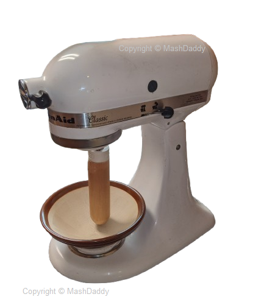
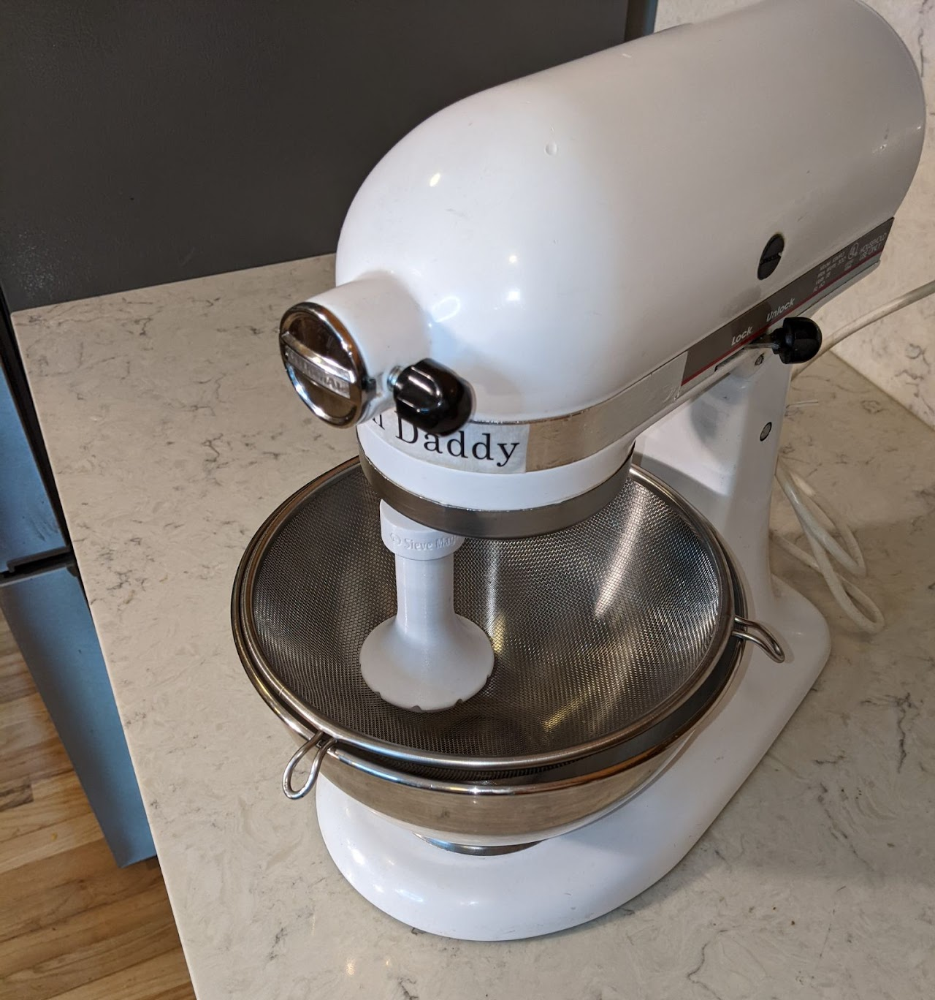
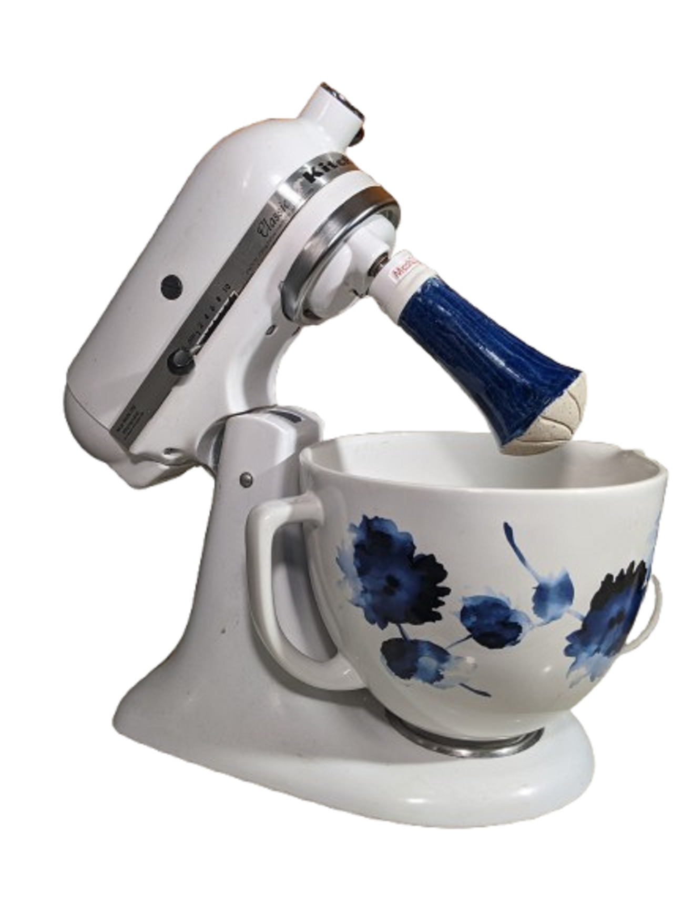
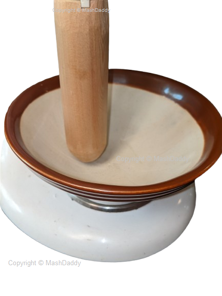
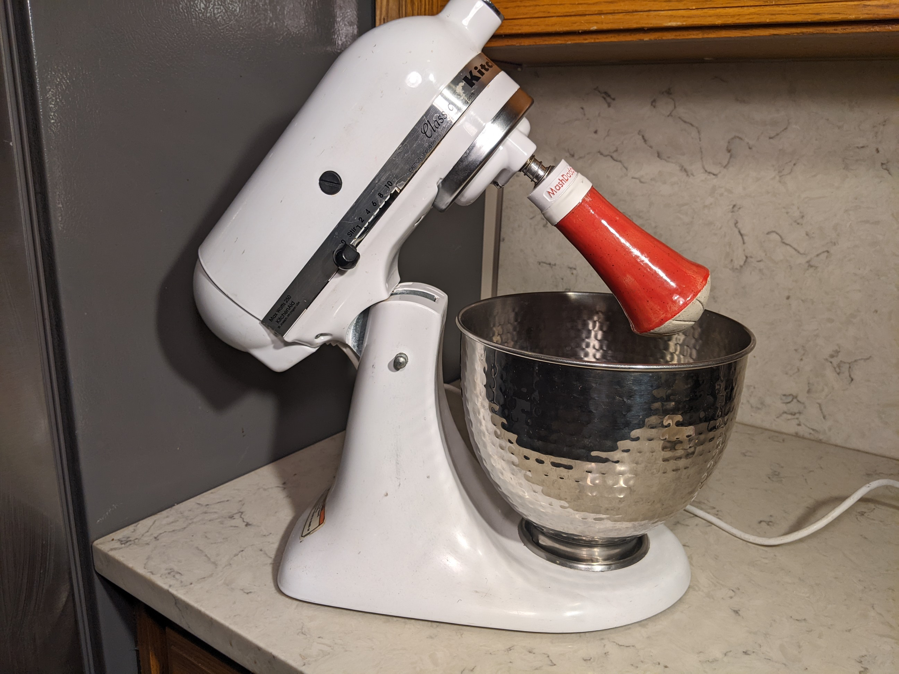
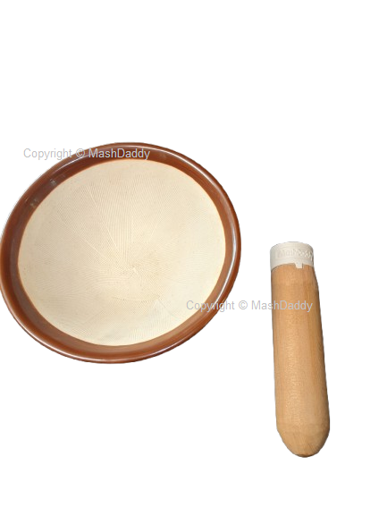
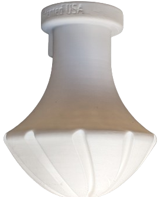
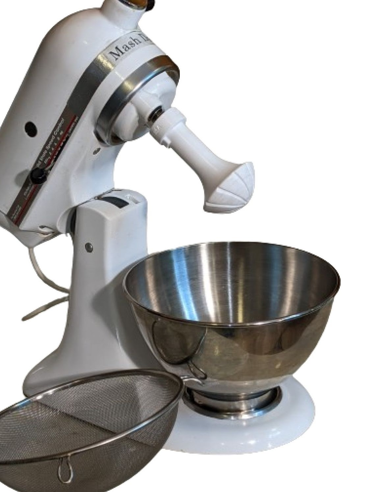

New
Make real matcha in your stand mixer.
The MashDaddy® Suribachi with Pestle grinds tea leaves into green tea matcha with no sugar, additives, foaming agents or green dyes.
The attachments
Suribachi bowls and pestles that fit your tilt-head stand mixer, in several finishes.








Watch and learn
Short demos, recipes and traditional preparations.
50 things to crush
The mortar and pestle is the oldest kitchen tool for grinding, crushing and blending. Here are 50 of the most popular recipes and uses.
Sauces, pastes and condiments
- Pesto – Classic Italian sauce with basil, garlic, pine nuts, Parmesan and olive oil.
- Guacamole – Traditional Mexican avocado dip with lime, onion, cilantro and jalapeño.
- Aioli – Garlic and olive oil emulsion, often made with egg yolk.
- Chimichurri – Argentinian herb sauce with parsley, garlic, oregano and vinegar.
- Salsa verde – Mexican green sauce made with tomatillos, cilantro and chilies.
- Harissa – North African chili paste with cumin, coriander, garlic and olive oil.
- Gremolata – Italian condiment with parsley, lemon zest and garlic.
- Curry paste – Thai or Indian blend of spices, garlic, ginger and chilies.
- Tapenade – Mediterranean olive paste with capers, anchovies and garlic.
- Sambal oelek – Indonesian chili paste with vinegar and salt.
- Romesco sauce – Spanish sauce with roasted red peppers, almonds and garlic.
- Adobo paste – Mexican seasoning blend of chilies, garlic, vinegar and spices.
- Barbecue dry rub – Blending spices like paprika, cumin and brown sugar.
- Garlic butter – Crushed garlic mixed into softened butter for spreading.
- Horseradish paste – Fresh horseradish root ground with vinegar.
Spice blends and seasonings
- Garam masala – Indian spice mix with cumin, coriander, cardamom and more.
- Za’atar – Middle Eastern mix of thyme, sesame seeds and sumac.
- Chinese five-spice – Blend of star anise, cloves, cinnamon, Sichuan peppercorns and fennel.
- Dukkah – Egyptian mix of nuts, seeds and spices.
- Ras el hanout – Moroccan spice mix with cinnamon, nutmeg, turmeric and more.
- Herbes de Provence – French blend of dried herbs like rosemary, thyme and oregano.
- Berbere spice – Ethiopian mix with chili, fenugreek and allspice.
- Pumpkin spice mix – Cinnamon, nutmeg, ginger and cloves.
- Homemade curry powder – Toasted and ground cumin, coriander, turmeric and fenugreek.
- Salt blends – Mixing sea salt with citrus zest, herbs or spices.
Beverages and cocktails
- Mojito muddling – Crushing mint and lime for fresh mojitos.
- Caipirinha – Muddled lime and sugar with cachaça.
- Herbal tea blends – Grinding dried herbs like chamomile and lavender.
- Golden milk mix – Turmeric, ginger, cinnamon and black pepper blend.
- Spiced chai masala – Grinding spices like cardamom, cinnamon and cloves for chai.
Dips and spreads
- Baba ganoush – Roasted eggplant dip with tahini, garlic and lemon.
- Hummus – Blending chickpeas, tahini, garlic and lemon.
- Nut butters – Homemade peanut, almond or cashew butter.
- Labneh with spices – Yogurt cheese topped with ground spices.
- Herbed cream cheese – Mixing garlic, herbs and spices into cream cheese.
Grains and nuts
- Rice flour – Grinding rice into a fine flour.
- Polenta or cornmeal – Crushing dried corn kernels.
- Nut meal – Almond flour or hazelnut meal for baking.
- Chia or flaxseed powder – Grinding seeds for smoothies or baking.
- Sesame seed paste – Grinding sesame seeds for tahini.
Desserts and sweets
- Chocolate chunks – Crushing chocolate for cookies and brownies.
- Crushed nuts – Almonds, walnuts or pecans for toppings and fillings.
- Cardamom sugar – Grinding cardamom with sugar for baking.
- Homemade marshmallow powder – Crushing dried marshmallows for hot cocoa.
- Mastic gum powder – Used in Greek desserts.
Miscellaneous uses
- Crushing medications – Turning pills into powder for easier consumption.
- Homemade tooth powder – Mixing baking soda, salt and mint.
- Incense and herbal blends – Grinding dried herbs for aromatherapy.
- Natural dye powders – Crushing berries, spices and plants for fabric dyeing.
- Homemade cleaning scrubs – Mixing coarse salt, lemon peel and baking soda.
A mortar and pestle unlocks deep flavors and fresh aromas that pre-ground spices or blended pastes can’t match.